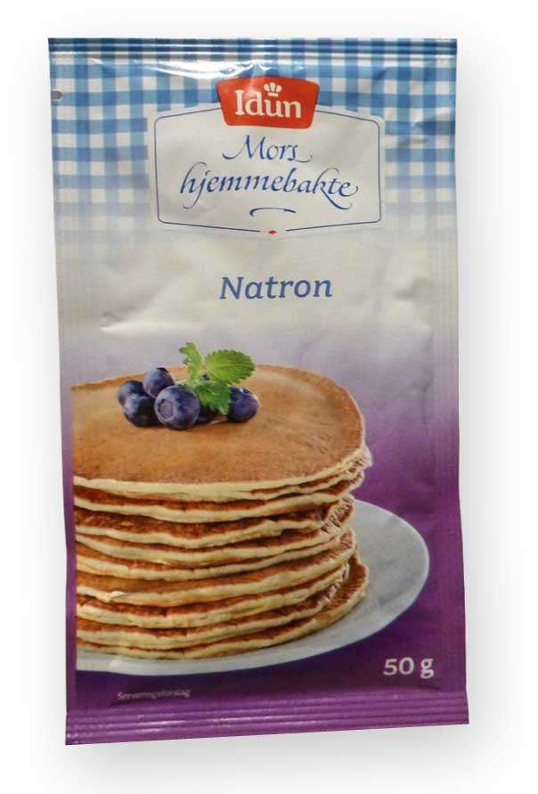

I kjemien arbeider vi ikke bare med ioner av ett atom, som Na+, Fe2+ og Cl–, men også med ioner av flere atomer, som NH4+, NO3– og SO42–. Når flere atomer til sammen danner en partikkel med ladning, kaller vi det et fleratomig ion.
De aller fleste negative fleratomige ionene i salter kan vi se på som rester av syrer som HNO3 og H2SO4. Fra syren HNO3 kan du tenke deg at H-atomet spaltes av uten å ta med seg noe elektron. Hydrogenatomet får en positiv ladning, H+. Vi sier at HNO3-molekylet avgir et H+-ion, og vi sitter igjen med det negative fleratomige ionet NO3–.
Formelen for et negativt ion som stammer fra en syre, har dermed like mange negative ladninger som det antallet H-atomer som er spaltet av fra syren i form av H+. For eksempel kan H2SO4 spalte av to H+, og det negative ionet har da formelen SO42–. Hvis H2SO4 bare spalter av ett H+, må det negative ionet inneholde ett H-atom og ha én negativ ladning, og formelen for ionet blir HSO4–.
Det er fem syrer du bør lære deg formlene for (se tabellen). Da kan du utlede formelen for de negative ionene fra syrene, og du kan gi ionene navn. Du kan legge merke til at alle de fem syreformlene inneholder ett eller flere H-atomer og også O-atomer. Vi kaller dem oksosyrer på grunn av innholdet av oksygen i formlene. Ikke-metallet gir oksosyren navn: S i svovelsyre, C i karbonsyre og N i nitrogensyre. For nitrogensyre bruker vi trivialnavnet salpetersyre.
| Oksosyre | Negative ioner fra oksosyre | ||
| HNO3 salpetersyre |
NO3– nitrat |
||
| HClO3 klorsyre |
ClO3– klorat |
||
| H2SO4 svovelsyre |
HSO4– hydrogensulfat |
SO42– sulfat |
|
| H2CO3 karbonsyre |
HCO3– hydrogenkarbonat |
CO32– karbonat |
|
| H3PO4 fosforsyre |
H2PO4– dihydrogenfosfat |
HPO42– hydrogenfosfat |
PO43– fosfat |
Navnet på ioneforbindelser av fleratomige ioner lager vi etter de samme reglene som for andre salter. Vi skriver navnet på metallet først og tar med ladningen i romertall dersom det er nødvendig. Deretter skriver vi navnet på det negative ionet slik vi finner det i tabellen på forrige side. Navnet på de negative ionene fra en oksosyre ender på -at.
Nedenfor finner du noen navn på ioneforbindelser der de fleratomige ionene er negative ioner fra vanlige oksosyrer. Vi oppgir ikke hvor mange ioner det er, men vi tar med ioneladningen hvis det er flere mulige og da med romertall. Navnene ender på -at enten det er tre eller fire O-atomer i ionet (NO3– eller SO42–).
 Natriumhydrogenkarbonat, NaHCO3, eller natron, som vi kaller stoffet til daglig, brukes som hevemiddel. Stoffet blir også kalt natriumbikarbonat.
| Formel | Navn på ioneforbindelser der de fleratomige ionene er oksosyrer | ||
| Ca(ClO3)2 | heter | kalsiumklorat | (Ca2+ + 2ClO3–) |
| FeCO3 | heter | jern(II)karbonat | (Fe2+ + CO32–) |
| KNO3 | heter | kaliumnitrat | (K+ + NO3–) |
| Mg(NO3)2 | heter | magnesiumnitrat | (Mg2+ +2NO3–) |
| NaHCO3 | heter | natriumhydrogenkarbonat | (Na+ + HCO3–) |
| Na3PO4 | heter | natriumfosfat | (3Na+ + PO43–) |
| NaH2PO4 | heter | natriumdihydrogenfosfat | (Na+ + H2PO4–) |
| PbSO4 | heter | bly(II)sulfat | (Pb2+ + SO42–) |